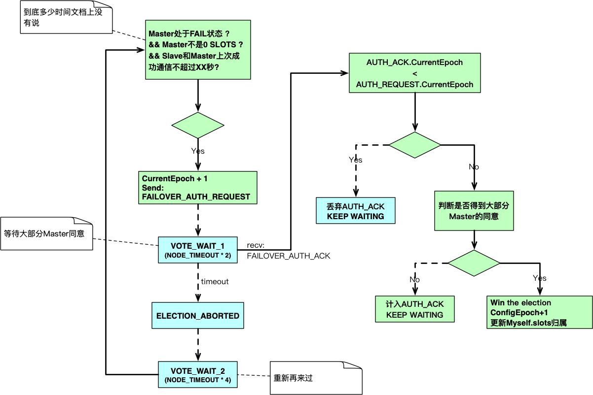
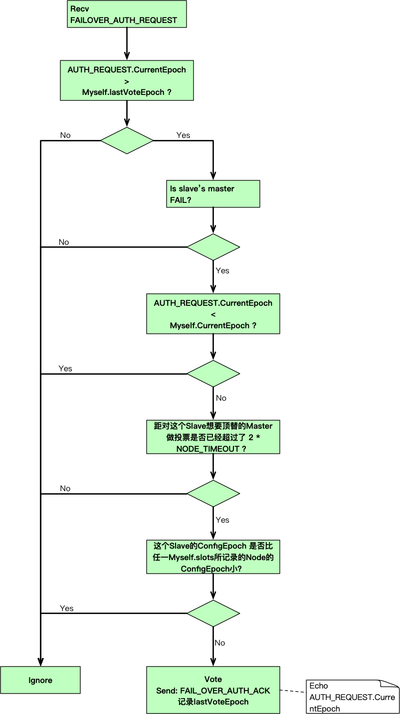

本笔记是对Redis Cluster Spec - Configuration handling, propagation, and failovers的归纳总结。
Epoch
因为Redis Cluster没有中心节点，因此Cluster中的每个Node都存有：1）自己的状态（ClusterNode源码）；2）Cluster的状态（ClusterState源码）。换句话说每个Node都有一个自己的视角来观察Cluster。
如果大家眼中看到的是一致的自然没有什么问题，如果不一致怎么办？Redis Cluster用是Epoch来解决。那么Epoch是什么？Epoch翻译过来的意思是时代。Redis Cluster定下了规矩，旧时代的说了不算，要听新时代的，某些情况下旧时代发来的请求不予理会（比如一个死了很久的Master复活）。
你可以看到Cluster状态中有一个currentEpoch字段，意思是整个集群当前的时代。考虑到这个Cluster状态是Node从自己的视角观察到的，因此也可以认为是这个Node所处的时代。
Node状态中有一个configEpoch字段，意思并非这个Node所处的时代，而是用来表示Slots由哪个Node掌管的意思——回忆一下有一个Slots->Node的Map。
集群状态发生变更就要产生一个新时代，准确点说当发生Slots易主的情况就要产生一个新时代。你可以理解为Cluster就是当今世界，Slots易主就是世界格局发生变更，每一次变更都是一个新时代。
Redis Cluster中的Node通过Gossip协议传播自己的状态+自己所认为的Cluster的状态，传播过程中都会带上configEpoch和currentEpoch（ClusterMsg源码），运用旧时代听新时代的规则，使得Node们达成一致，也就是Cluster状态达成一致。
下面是一些实现细节的总结：
- Epoch是一个64位无符号整形
- 每个Master有自己的ConfigEpoch且在整个Cluster中唯一、Slave的ConfigEpoch随其Master
- CurrentEpoch = max(ConfigEpoch)
- Master的ConfigEpoch初始值是0，也就是说CurrentEpoch的初始值也是0
Slave Promotion
Slave的动作
下面是总结的在发生Slave Promotion时，Slave做的事情。

Master的动作
下面是总结的在发生Slave Promotion时，Master做的事情。

传播Slots的配置
Slave赢得选举之后会在己侧更新Slots上的归属信息，然后在定时的PING/PONG中将这个信息传播出去。
PING/PONG总是会携带上Slots所属Master的信息（包括ConfigEpoch）
PING的Reciever如果发现Sender的某个Slot上的Master.ConfigEpoch比自己这里记录的小，那么就会返回UPDATE告诉Sender更新Slots归属信息。
下面是两个规则：
- 如果一个Slot不属于任何Master，然后有一个Master宣称拥有它，那么就修改己侧的Slots信息把这个Slot关联到这个Master上。
- 如果一个Slot已经归属一个Master，然后又有一个Master宣称拥有它，那么就看谁的ConfigEpoch大，大的那个赢
Node复活后遇到的问题
Node A有两个Slot，然后它死了，它被顶替了，等它复活时发现两个Slot一个被Node B接管，另一个被Node C接管了，那么它：
- 因为自己的ConfigEpoch已经很旧了，所以它复活后不负责任何Slot
- 然后它会成为最后一个Slot的Master的Slave
Slave迁移算法
Slave迁移时一个自动过程。
举个例子，现在有Master A、B，它们对应的Slave有A1、B1、B2。现在A死了，A1顶替上去，不过这个时候A1就是一个光棍Master（它没有Slave），B有富余的Slave（B1和B2），把其中一个匀给A1当Slave。
这个过程不需要共识，因为只是修改Slave的归属，也不会修改ConfigEpoch。
Slave迁移有两个规则：
- 当有多个Slave富余时，选择NodeID字典顺最小的那个来迁移
- 只有当Master的Slave数量>=
cluster-migration-barrier时，才会挑选它的Slave做Migration
两个跳过共识修改ConfigEpoch的操作
下面两个操作比较危险，最好确定一个成功后再执行另一个：
CLUSTER_FAILOVER TAKEOVER（手动Failover）直接将一个Slave提升为Master，不需要大多数Master同意。- Slot Migration同样不需要大多数Master同意。
所以就有可能出现同一个Slot有两个相同ConfigEpoch的Master宣称由自己负责，这种冲突的解决算法是：
- 如果Master A发现Master B也宣称了对Slot X的主权，并且两者的ConfigEpoch一样
- 如果Master A的NodeID的字典顺比Master B的小
- 那么Master A就把己侧的CurrentEpoch+1，同时ConfigEpoch改成和CurrentEpoch一样
Node重置
略，见文档。
移除Node
略，见文档。
一些自问自答
Q：ConfigEpoch何时变化？
A：Slave Promotion时、手动Failover时、Slot Migration时
Q：ConfigEpoch怎么变化？
A：Node->ConfigEpoch = Cluster->CurrentEpoch + 1，结果也就是Cluster->CurrentEpoch加1了。源码见这里。
Q：两个Master的ConfigEpoch一样怎么办？
A：这个会出现在两个Slave同时Promotion时，解决办法是NodeID字典序比较小的那个会再一次Bump ConfigEpoch，源码见这里。
Q：ConfigEpoch有什么用？
A：当有两个Master宣称自己拥有同一个/批Slot时，ConfigEpoch大的那个赢，因为大的那个代表最新信息，其他Node只会采用赢的那方所宣称的信息。
Q：CurrentEpoch有什么用？
A：1）用来判定Node所获得的Cluster信息的新旧。2）当Node要变更ConfigEpoch时派用处。
参考资料
官方文档，有些不是太清楚：
下面是饿了么工程师写的文章，比较透彻
下面是两篇阿里工程师的，写的没有上面的好